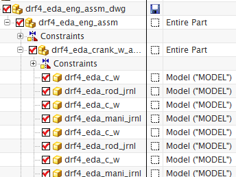
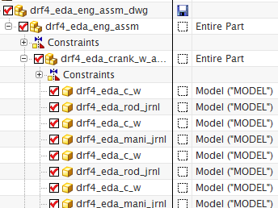

查看引用集
-
打开装配导航器
 ，然后将其固定。
，然后将其固定。 -
展开导航器中的所有节点，以便您可以看到整个装配结构。

该图纸上一次打开与保存时显示的引用集为模型，注意由于部件 drf4_eda_eng_assm 与 drf4_eda_crank_w_assm 中不存在模型引用集，将使用整个部件选项来加载它。
-
关闭所有部件。
您将使用另一个引用集配置来重新打开相同的装配图纸。
打开装配导航器  ，然后将其固定。
，然后将其固定。
展开导航器中的所有节点，以便您可以看到整个装配结构。

该图纸上一次打开与保存时显示的引用集为模型，注意由于部件 drf4_eda_eng_assm 与 drf4_eda_crank_w_assm 中不存在模型引用集，将使用整个部件选项来加载它。
关闭所有部件。
您将使用另一个引用集配置来重新打开相同的装配图纸。